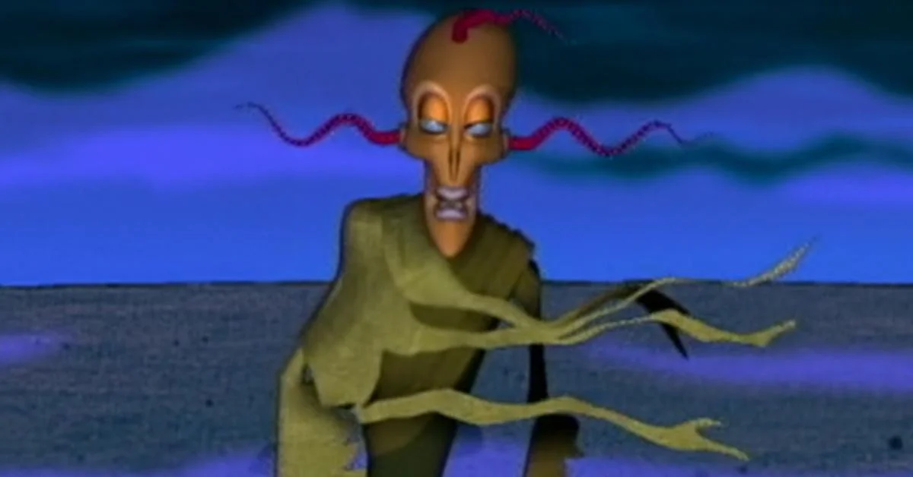
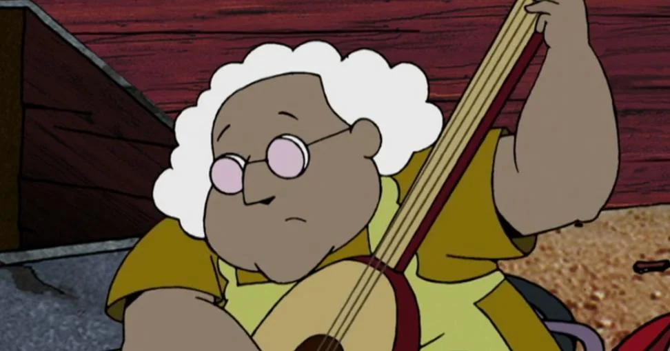

Memorable Episodes
King Ramses Curse: is likely the most iconic episode of the series overall. The uncanny nature of the CG King Ramses (who threatens Courage with a curse) is still a very creepy image after all these years. It helped the series make an impact early on in its run, and it's likely why anyone remembers Courage the Cowardly Dog to this day.

Muted Muriel: This list had to include Shirley somewhere in it as she's one of the more common chaotic presences in Courage's life, but her episodes come with an undeserving edge. Someone's usually punished (Eustace, in most cases) when they slight her, so she curses them in some way. But the best use of her actually comes completely at random when Muriel decides to stop speaking when Eustace ignores her. As a result Courage seeks out Shirley's help, only for her to summon a giant starfish that would destroy the world unless Muriel spoke. It ends up making for one of the funniest uses of her chaos, and helps to showcase more of Muriel as she actually sticks up for herself to Eustace's abuse. It's rare, but always fun when it happens.

In total, there were 52 episodes in four seasons produced, plus a pilot episode and a special episode.
Featured Episodes
Episode List
Below you will see a few episodes that are highlighted. those are links to those memoriable shows to learn more about them. Take your time to go through them to learn more about them.
- The Chicken from Outer Space
- A Night at the Katz Motel
- Cajun Granny Stew
- The Shadow of Courage
- Dr. Le Quack, Amnesia Specialist
- Courage Meets Bigfoot
- Hothead
- The Demon in the Mattress
- Freaky Fred
- Night of the Weremole
- Mother's Day
- The Duck brothers
- Shirley the Medium
- King Ramses
- The Clutching Foot
- The Hunchback of Nowhere
- The Gods Must Be Goosey
- Queen of thr Black Puddle
- Everyone Wants to Direct
- The Curse Of Shirley